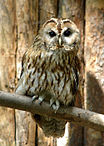

Link pildile
(By I, Chrumps,
CC BY-SA 3.0,
https://commons.wikimedia.org/w/index.php?curid=2345994)
Kodukakk (Strix aluco) on kaklaste sugukonda kaku perekonda kuuluv röövlind.
Lõunas ulatub levila kuni Pakistani ja Himaalajani.
Eestis, nagu suuremas osas levilast, on kodukakk üldlevinud väikesearvuline haudelind.
Kodukaku pesitsusaegset arvukust hinnatakse 1000–2000 paarile, talvist arvukust 3000–6000 isendile.
Kodukakk elab metsas (sega- ja lehtmetsades ning lõunataigas), harvem aedades ja parkides. Levila põhjaosas elab ta peamiselt tasandikul, põhjaosas peamiselt mägedes. Ta on paigalind, ebasoodsatel aastatel hulgulind.
Kodukakk on öise eluviisiga, toitub lindudest (tuvidest ja põldpüüdest varblaste ja pääsukesteni), roomajatest (nastikupoegadest), kahepaiksetest, suurtest putukatest, väikestest imetajatest ja väga harva kaladest. Kõige rohkem sööb ta närilisi, mistõttu toob inimesele suurt kasu.
Pesa teeb kodukakk puuõõnsusesse. Vahel hõivab ta vareslaste või pistrikuliste pesi või pesitseb hoonetes. Ta sigib vara, alustades sellega juba veebruari lõpul ja märtsi algul, muneb peamiselt aprilli algul. Kurnas on 2–4 valget muna, mida emalind haub 28–30 päeva. Toidurohketel aastatel on mune rohkem, isegi kuni 7–8: headel hiireaastatel kodukaku arvukus tõuseb. Haudumine algab pärast esimese muna munemist, mistõttu pesas on pojad erivanused. Pojad hakkavad lendama 30–35 päeva vanuselt, aga pesast väljuvad nad juba varem, kui nad on alles pooleldi udusulestikus.
{kind=link}